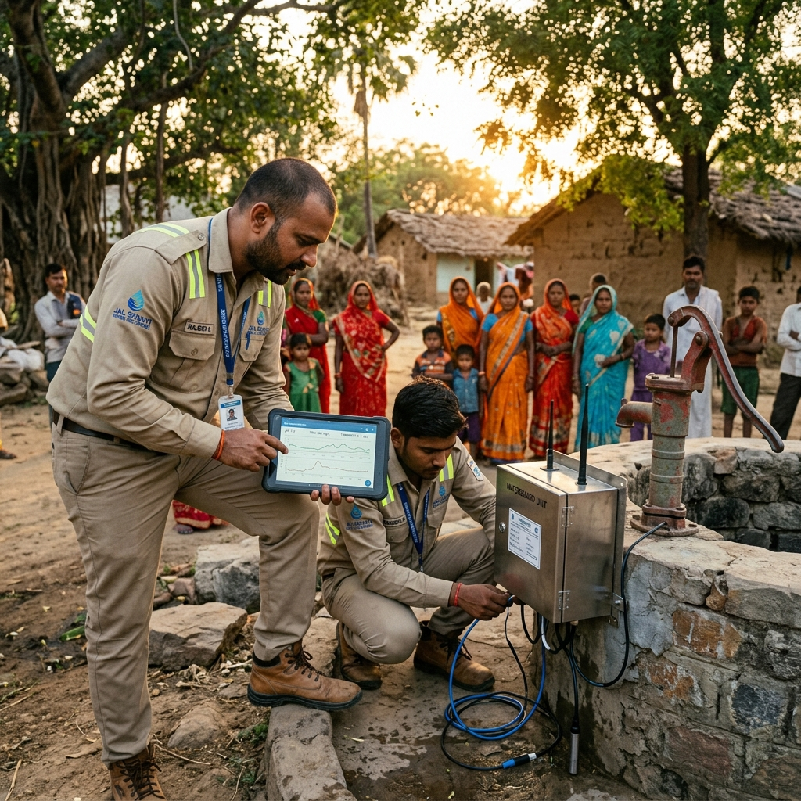
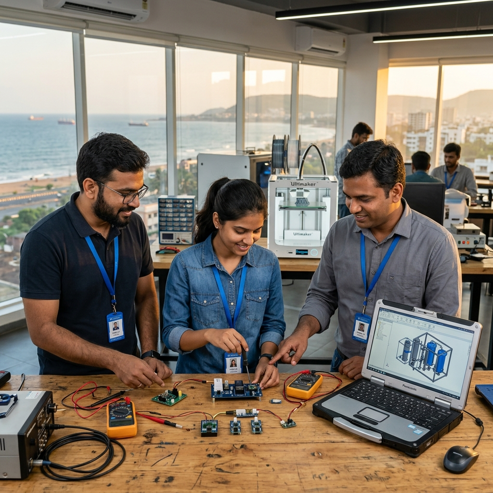

Edge Telemetry
Hardware modules engineered for the most brutal industrial environments. Our sensors capture precise fluid dynamics, pressure differentials, and chemical composition data in real-time — even in remote, off-grid locations.
Smart Water Intelligence Platform
Edge telemetry, predictive analytics, and real-time cloud dashboards powering industrial water infrastructure across the globe.
SK Jalrakshak Innovations Private Limited (CIN: U26517AP2025PTC119413), incorporated on 16 May 2025 under RoC-Vijayawada, delivers next-generation water intelligence — from edge sensors deployed in the harshest environments to cloud dashboards that predict failures before they happen.
We partner with municipalities, industrial complexes, and infrastructure operators to provide end-to-end visibility into every drop of water flowing through their systems. Our mission is to eliminate waste, prevent failures, and safeguard the world's most critical resource.
Edge-first architecture means critical alerts reach operators in under 0.1 seconds. No cloud round-trips, no delays, no blind spots.
IP68-rated sensors engineered for extreme temperatures, submersion, and corrosive chemical environments. Built to outlast the infrastructure they protect.
Machine learning models trained on millions of operational data points detect anomalies 72 hours before critical failures occur.
Self-sustaining IoT nodes that operate independently with solar power and satellite connectivity. Deploy anywhere, monitor everywhere.
Scroll to explore how we deploy actionable intelligence across critical water infrastructure.
We process over 2.4 million data points directly at the sensor level every minute. By bypassing the cloud for critical operations, we reduce latency to near zero — ensuring split-second responses to pressure drops and structural anomalies across entire municipal grids.

A unified dashboard gives operators complete oversight across thousands of miles of pipeline. Visualize flow rates, chemical composition, and pressure differentials in real-time — with automated compliance reporting built right in.

Hardware modules engineered for the most brutal industrial environments. Our sensors capture precise fluid dynamics, pressure differentials, and chemical composition data in real-time — even in remote, off-grid locations.
Machine learning models that predict infrastructure anomalies before they occur. A unified cloud dashboard provides complete operational oversight across thousands of miles of pipeline, treatment plants, and distribution networks.
Our forecasting engine leverages historical patterns, weather data, and real-time sensor feeds to prevent infrastructure failures. We don't just monitor water — we anticipate its behavior across entire networks.
Automated regulatory compliance reporting that meets national and international water quality standards. Generate audit-ready documentation in seconds with full chain-of-custody traceability.

"The telemetry platform completely transformed how we monitor our water treatment facilities. Real-time data has reduced our response time by 80%."Rajesh KumarOperations Director · Hyderabad Metro Water
"SK Jalrakshak's edge sensors operate flawlessly even in our most remote installations. The reliability is exceptional — zero downtime in 18 months."Priya SharmaField Engineer · National Water Board
"Their predictive analytics caught a pipeline failure 72 hours before it would have happened. That single alert saved us ₹2 crore in emergency repairs."Anand VermaInfrastructure Manager · AP State Utilities
"The cloud dashboard is intuitive and powerful. Our entire team adopted it within a week — no training needed. It's genuinely enterprise-grade."Meera NairTechnology Lead · Chennai Corp
"We've deployed their system across 12 facilities and the consistency of data quality is remarkable. The ROI was visible within the first quarter."Vikram PatelPlant Manager · Gujarat Water Authority
"Their automated anomaly detection has completely eliminated manual gauge reading for our district. We saved 400+ man-hours per month."Karan DesaiWater Works Supervisor · Vizag Municipal
Our edge telemetry isn't just about collecting data. It's about fundamentally changing how municipal and industrial water networks operate at scale.
By providing unparalleled visibility into fluid dynamics, chemical levels, and pipeline integrity, we empower operators to stop leaks before they happen and optimize distribution with sub-millisecond precision. We've effectively reduced water waste by up to 34% across our monitored sectors in just the first year of deployment.
Our clients report an average ROI of 280% within the first 12 months, with some installations paying for themselves in under 90 days through waste prevention alone.
A Private Limited Company specializing in smart water intelligence — edge telemetry, cloud dashboards, and predictive analytics for industrial water infrastructure. CIN: U26517AP2025PTC119413.
D No: 2-14130, 2nd Floor, Plot-13, Revenue Ward 5, Madhurawada, Visakhapatnam, Andhra Pradesh 530048. Registered under RoC-Vijayawada.
Kameswara Sarma Nagabhatla (DIN 11111205) and Sirish Kumar Pagoti (DIN 11111206), both serving since incorporation on 16 May 2025.
Email us at info.skjipl@gmail.com or visit our registered office in Visakhapatnam. We typically respond within 24 hours.
End-to-end water intelligence: edge telemetry hardware, cloud monitoring dashboards, predictive analytics engines, solar IoT grids, compliance automation, and custom API integrations for SCADA systems.
Most installations are completed within 48 hours. Our plug-and-play sensor modules require zero code configuration and connect automatically to our cloud platform.
Every standout project begins with one conversation. Tell us your vision and our engineering team will reach out personally within 24 hours.